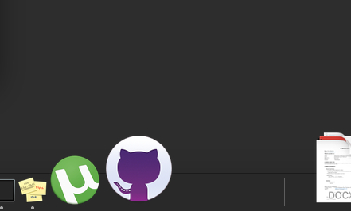

When it comes to keeping many apps on the Dock , it might get a bit clustered for the icons to be visible easily.
Here this technique may be handy if you like to keep your things organized, just like me.
All it
requires it a little bit of command writing on terminal.
Open the terminal - Press command + space
Type in terminal and press return. Terminal window would open.
Now type in the following lines.
defaults write com.apple.dock persistent-apps -array-add '{"tile-type"="spacer-tile";}'
Press return.
killall Dock
Press return.
Voila, you would see an extra space tile just where the icons end on dock.

Now you can rearrange it just like other icons, by dragging it over to its new place.
To remove it, you just need to drag it out of the dock and it would be removed from the dock.
Using this way you can keep your dock organized.
Just like I have done. Grouping the icons of different categories
into different group.